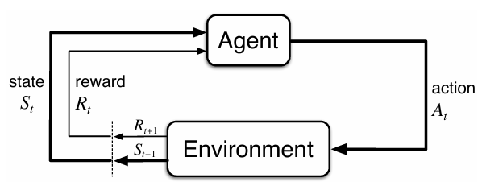

在赌博机中，我们评估动作a的价值 q∗(a)
在MDP中，我们估计每个动作在每个状态s中的价值 q∗(s,a)
3.1 “智能体-环境“交互接口
进行学习及实施决策的机器被称为智能体 (agent)。 智能体之外所有与其相互作用的事物都被称为环境 (environment)。
MDP与智能体共同给出了轨迹
S0,A0,R1,S1,A1,R2,S2,A2,R3,…
有限MDP中，状态、动作和收益的集合 (S、 A 和R）有限。
随机变量R和S具有定义明确的离散概率分布，并且只依赖于前继状态和动作。
因此 p(s’,r∣s,a)=Pr{St=s’,Rt=r∣St−1=s,At−1=a}（这是定义）
由于这是一个概率，所以必然有
Σs’∈SΣr∈Rp(s’,r∣s,a)=1foralls∈S,a∈A(s)
甚至，我们可以因此导出
p(s’∣s,a)=Pr{St=s’∣St−1=s,At−1=a}=Σr∈Rp(s′,r∣s,a)
甚至可以定义“状态-动作”二元组的期望收益
r(s,a)=E[Rt∣St−1=s,At−1=a]=Σr∈RΣs’∈Srp(s’,r∣s,a)
和＂状态－动作－后继状态” 三元组的期望收益
r(s,a,s′)=E[Rt∣St−1=s,At−1=a,St=s′]=Σr∈Rrp(s′∣s,a)p(s’,r∣s,a)
3.2 目标和收益
目标：最大化其收到的总收益。
收益信号只能用来传达什么是你想要实现的目标，而不是如何实现这个目标。譬如，下棋时不能把吃掉其他棋子作为目标，而应该直接把赢下比赛当做目标。
3.3 回报和分幕Returns and Episodes
一般我们寻求最大化期望回报，记为 Gt。最简单的情况下，回报是收益的综合：
Gt=Rt+1+Rt+2+Rt+3+⋯+RT
我们称每个子序列为幕（episodes）T是最终时刻，实际情况下，一盘游戏，一次迷宫的结束。
显然，并不是所有过程都可以分幕，此时 T=∞ ，再按照上述公式定义回报并不合适（容易变为无穷），引入额外一个概念——折扣(discounting)。
Gt=Rt+1+γRt+2+γ2Rt+3+⋯=Σk=0∞γkRt+k+1
0≤γ≤1 折扣率
折扣率 γ 是一个0到1之间的数。它表示了未来收益相对于即时收益的重要性。γ越接近1，未来收益的权重就越大；γ越接近0，智能体就越"目光短浅"，更注重即时收益。
显然，对于这个公式，我们将邻接时刻的回报用递归方式联系：
Gt=Rt+1+γGt+1
（由于太显而易见故不具体写公式了）
总结：任务分为两种，一种episodic task，一种continuing task，并不绝对（譬如书上的Exercise 3.4,3.5）
3.4 分幕式和持续性任务的统一表示法Unified Notation for Episodic and Continuing Tasks
为了描述分幕式任务在第几幕，我们使用记号 St,i 表示幕i中时刻t的状态（ At,i,Rt,i,πt,i,Ti同理）
不妨将幕的终止看作一个特殊状态的吸入口

因此，所有回报都可以用如下公式表示：
Gt=Σk=t+1Tγk−1−1Rk 允许 T=∞,orγ=1(不同时)
3.5 策略和价值函数Policies and Value Functions
价值函数→评估在这个状态下有多好→回报的期望值
策略是从状态到每个动作选择概率的映射
如果智能体在时刻 t选择了策略 π 那么 π(a∣s) 就是当 St=s 时 At=a 的概率
当前状态是 St, 并根据随机策略 π选择动作 用 π,p 表示 Rt+1的期望（Exercise 3.11)
Eπ(Rt+1∣St)=Σrt+1p(rt+1∣st)rt+1=Σrt+1ΣaΣst+1p(st+1,rt+1∣st,a)π(a∣st)rt+1
定义策略 π 下状态 s 的价值函数（即从状态 s 开始，智能体按照策略π进行决策所获得的回报的概率期望值）为
vπ(s)=Eπ[Gt∣St=s]=Eπ[Σk=0∞γkRt+k+1∣St=s] for all s∈S ，策略π的状态价值函数
定义策略 π 下状态 s 的采取动作a的价值（即从状态 s 开始，智能体按照策略π，执行动作a后，所有可能的决策序列的期望回报）记为 qπ(s,a)。
qπ(s,a)=Eπ[Gt∣St=s,At=a]=Eπ[Σk=0∞γkRt+k+1∣St=s,At=a]，策略π的动作价值函数
显然，这两个定义有关系(Exercise 3.12 3.13，可以分别借助 π,p互相表达)
vπ(s)=Eπ[Gt∣St=s]=Eπ[Eπ[Gt∣St=s,At=a]]=Eπ[qπ(s,a)]=Σa∈Aπ(a∣s)qπ(s,a)
Exercise 3.13 不懂（现在搞懂了，，，因为不太熟练所以开始没有做出来）
qπ(s,a)=Eπ[Gt∣St=s,At=a]=Eπ(Rt+1+γGt+1∣St=s,At=a)=Es’,r[Eπ(Rt+1+γGt+1∣St=s,At=a,St+1=s’,Rt+1=r)]=Σs’∈S(t+1),r∈R(t+1)p(s’,r∣s,a)[r+γvπ(s’)]
估计v与q：求平均，Monte Carlo methods，参数化
需要注意的是，在Reinforce Learning 和 dynamic programming中，价值函数一般都有递归的基本特性。(事实上就是把Exercise3.12,3.13结合起来）
（3.14）被称作 vπ的贝尔曼方程 (Bellman equation for vπ)，表达了相邻两个价值状态的关系。
不妨从一个状态向后观察所有可能到达的后继状态，如图所示。 其中空心圆表示一个状态，而实心圆表示一个“状态－动作“二元组。
贝尔曼方程 (3.14) 就是对所有可能性采用其出现概率进行加
权平均。

价值函数 vπ是贝尔曼方程的唯一解。
称上图为回溯图。回溯操作就是将后继状态（或“状态－动作“ 二元组）的价值信息回传给当前时刻的状态（或“状态－动作“二元组）。
Example 3.5
不会 Exercise 3.15：没懂为什么符号不重要？是因为 γ会把他们弱化吗？
Example 3.6
Exercise 3.17 qπ的贝尔曼方程 (Bellman equation for qπ)
Exercise 3.18 3.19 (Exercise 3.12 3.13的另一种理解)
3.6 最优策略和最优价值函数Optimal Policies and Optimal Value Functions
最优策略：
若对于所有的 s∈S,π≥π’，那么应当 vπ(s)≥vπ’(s)。 总会存在至少一个策略不劣于其他所有的策略，这就是最优策略。
用 π∗表示。定义:for any s∈S,v∗(s)=maxπvπ(s)
最优的策略也共享相同的最优动作价值函数，记为 q∗
定义:for any s∈S,a∈A,q∗(s,a)=maxπqπ(s,a)
有如下等式（该等式阐述了状态和价值的一致性）
q∗(s,a)=E(Rt+1+γv∗(St+1)∣St=s,At=a)
Example 3.7（Exercise 3.25-3.29就是在教为什么要这么写这些方程）
需要注意的是，贝尔曼方程中状态和价值有一致性条件，因此如下等式才得以成立。

最后两个等式就是 v∗的贝尔曼最优方程的两种形式。 q∗的贝尔曼最优方程如下

对于有限 MDP 来说， v∗ 的贝尔曼最优方程（3.19) 有独立千策略的唯一解。
由于 v∗的定义本身就包含了未来的信息，因此一旦确定，最优策略的确定也非常容易。如果在一个策略中，只有这些动作的概率非零，那么这个策略就是一个最优策略。（贪心）
在给定 q∗的清况下，选择最优动作的过程变得更加容易。 给定 q∗，甚至不需要进行单步搜索的过程，也就是说，对于任意状态 s，智能体只要找到使得 q∗(s,a) 最大化的动作a就可以了。
哈哈哈，因为上面这两段话是复制的所以我完全不懂呢
Exercise 3.29 ***非常重要
{kind=link}